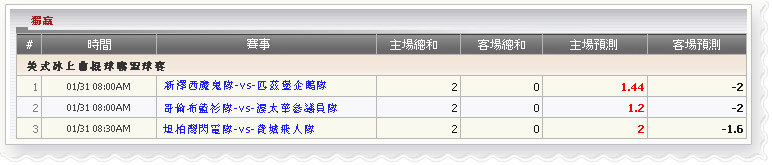

獨贏
定義:
查看代理贏輸根據占成注單已投注種類於獨贏:獨贏

獨贏
用詞註解:
- 主場總和：代理總收入金額由會員金額根據占成，如果主隊選擇投注
- 客場總和：代理總收入金額由會員金額根據占成，如果客隊選擇投注
- 主場預測：代理的數量可能會輸，如果會員贏得選擇投注(主隊)
- 客場預測：代理的數量可能會輸，如果會員贏得選擇投注(客隊)
在上圖中, 我們有以下投注詳情信息:
- 第一注單:金額 = 10, 賠率 = 0.72, 選擇 = 主隊( 新澤西魔鬼隊),代理占成 = 20%
--> 主場總和 = 金額*代理占成 = 10*20% = 2
--> 客場總和 = 0
--> 主場預測 = 金額*賠率*代理占成 = 10* 0.72* 20% = 1.44
--> 客場預測 = 金額* 代理占成 = 10* 20% = 2
- ▪第二注單:金額 = 10, 賠率 = 0.6, 選擇 = 主隊( 哥倫布藍衫隊),代理占成 = 20%
--> 主場總和 = 金額*代理占成 = 10*20% = 2
--> 客場總和 = 0
--> 主場預測 = 金額*賠率*代理占成 = 10* 0.6* 20% = 1.2
--> 客場預測 = 金額* 代理占成= 10* 20% = 2
- 第三注單:金額 = 10, 賠率 = 0.8, 選擇 = 主隊( 哥倫布藍衫隊),代理占成 = 20%
--> 主場總和 = 金額*代理占成 = 10*20% = 2
--> 客場總和 = 0
--> 主場預測 =金額*賠率*代理占成 = 10*1*20% = 2
--> 客場預測 = 金額* 代理占成 = 10* 0.8* 20% = 1.6
注意: